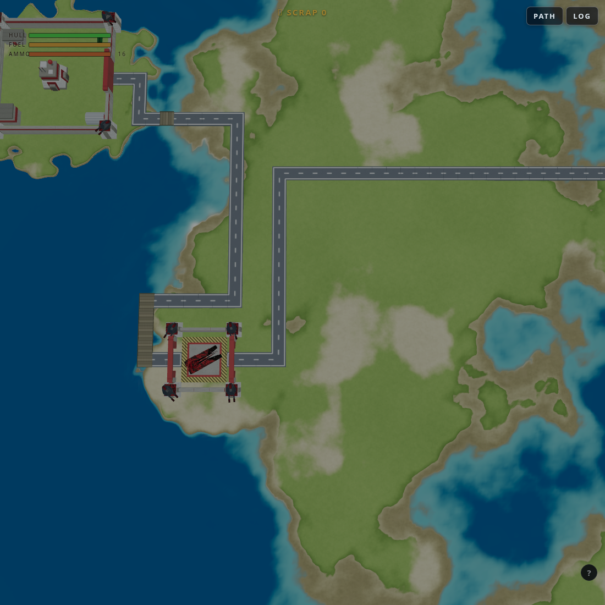
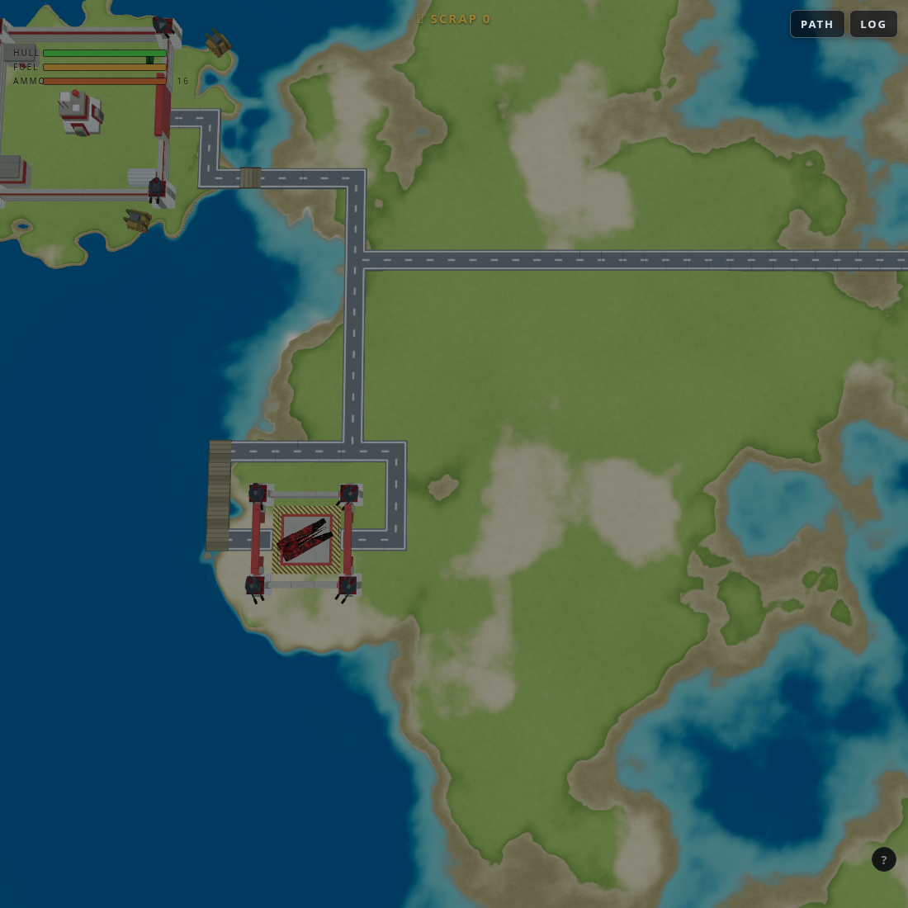
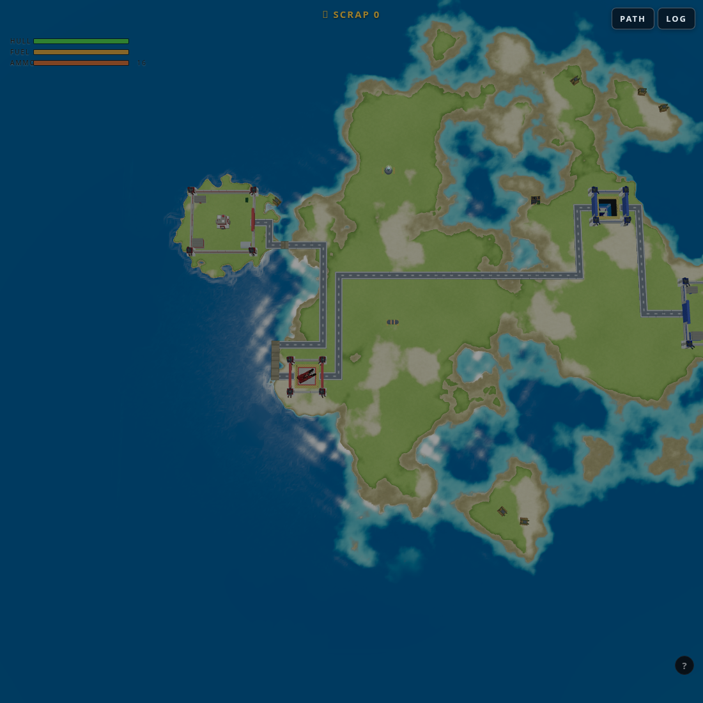

Why two roads ran side by side — an autopsy in three wrong answers
Jacob spotted parallel roads and asked: existing road cells cost nearly nothing
(ROAD_REUSE = 0.1) in the layout A*, so why would a new connection ever lay a twin
alongside instead of merging? He then rejected my first explanation — and he was right to.
This post is the record of being wrong twice before the data gave up the truth.
Wrong answer №1: "the turn penalty makes joining expensive"
Plausible math (joining = 2–4 turns at 6 apiece vs 0.9/cell saved), so I added a "hug surcharge" for riding beside a road. Render before/after: pixel-identical. Falsified — and worse, the surcharge taxes the on/off ramps of legitimate junctions. Removed.
Wrong answer №2: "then it must be the heuristic"
Dropping the turn penalty to 2 changed nothing either. But the hunt exposed a genuine bug:
the A* heuristic assumes every cell costs ≥1, while road cells cost 0.1 — an inadmissible
heuristic that overestimates along cheap corridors, voiding the optimality guarantee. Fixed
with hScale (scale h by the minimum cell cost). Necessary… and still not
sufficient: the parallel survived. The truth needed ground truth.
The actual answer: two gates on one FOB
Dumping each connection’s cell path showed the two “parallel roads” were verticals 3 cells apart in the same coastal corridor — one entering the FOB’s NW gate (main↔fob), one leaving its NE gate (fob↔fob). And the honest economics: joining costs ~20–30 (lateral cells + turns) to save ~8 over the short shared stretch. A* was right all along — with two doors in play, the parallel genuinely is optimal. No cost knob fixes a destination that is simply a different door.


Fix, round one (v306): unconditional gate sharing — route every later connection out of the gate that already has a road. It killed the parallel (118 → 100 cells, gap-pairs 0), but Jacob rejected the LOOK: a gate with no road reads wrong, and he wanted the two gate roads to merge at the trunk’s turn just outside the base.
Fix, final (v307): Jacob’s ratio. "What if you doubled the cost of all land tiles and kept existing roads almost free?" — exactly the right lever. Join overhead (turns + lateral cells) is fixed; merge savings are (ground − reuse) per shared cell. Raising land from 1 → 3 (water scaled to match) moves the break-even from ~30 shared cells to ~7. Each gate keeps its own road, and the cost field does the merging: the path dump shows the NE-gate road running two cells, joining the trunk at its turn above the tower, riding it at 0.1/cell, and peeling off east. Gap-pairs: 10 → 0 with both gates roaded.

Takeaway
The reuse discount was innocent; the search was (mostly) right; the bug lived a layer above the cost field, in endpoint choice. The falsified theories still paid rent: the heuristic fix is what makes the 20-cell backwards-ride even findable. And the lesson Jacob’s pushback taught: when A* does something “wrong,” believe the optimality and audit the inputs.
Repro: node ~/pw/roadpaths.cjs 513445024 (per-connection paths) ·
node ~/pw/roadcheck2.cjs <seed> (gap metric) ·
node ~/pw/shoot-map-at.cjs 513445024 out 200 "20,-15" (renders) · v307 uncommitted.